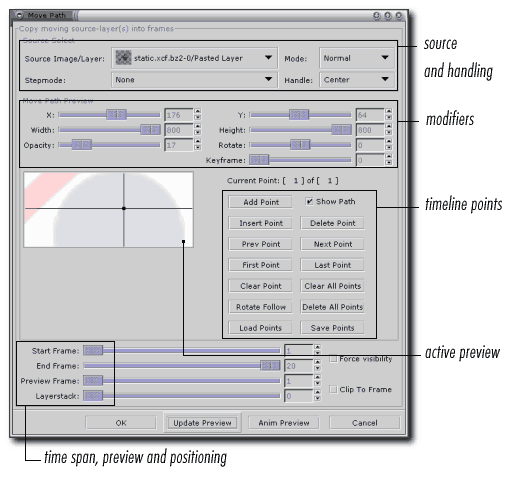
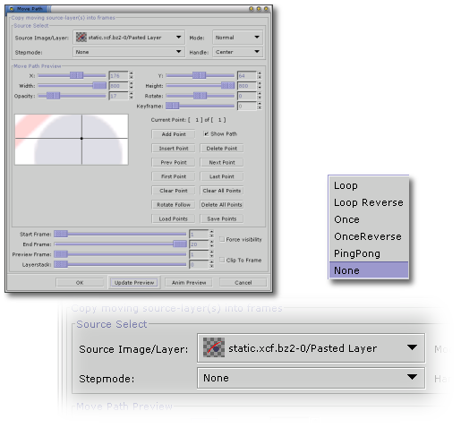
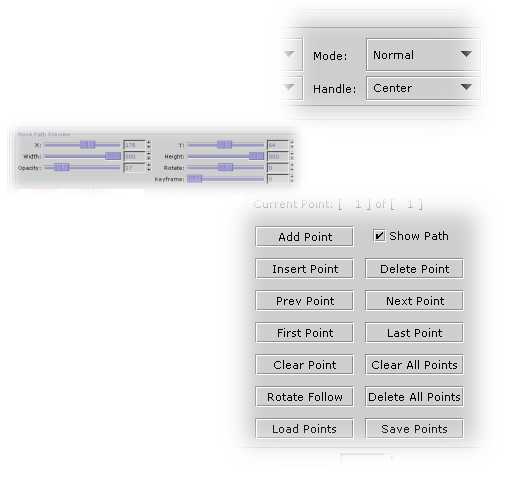
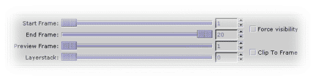

GAP is an advanced tool to be able to create animations, this guide should give you some sort of view of how GAP works and what you can do with it. For a good tutorial of how to make an animation with GAP then take a look at the "Advanced Animation" tutorial.

Source Image/Layer specifies, which layer you want to animate on top of the current image. If you select a layer from a multilayer image,
make sure you don't forget to specify the stepmode as well.
The stepmode is there to define how you want to animate the multilayered image you specified in the source image drop down.
Mode defines what mode should be GIMP using for the layer in the final layer stack.
In the modifier section you specify placement, dimension and opacity values for the current key.
You can navigate in time by adding time points as shows the timeline section.
At the bootom of the dialog you'll find some inportant sliders. The duration of the animation is specified using the start frame and end frame sliders or input boxes.
Preview frame renders frame # specified when the update preview button is pressed. Layerstack defines where the inserted objects will go in the layer stack of the final image.
0 means top of the layer stack, while lower values move the layer towards bottom of the image.

Stepmode defines how you want the source multi-layer image to be animated withing the final animation render.
Loop will suprisingly loop all the layers/frames of the source animation endlessly, while loop reverse will do the same, but for the opposite direction.
Once is a simple one-time loop of the source animation, once reverse does it in the opposite direction. Pingpong will create a looping animation,
but once it reaches the bottom of the source image stack, it moves the opposite direction.
Use the last mode (none) if you only want to use a single layer out of a multi-layered source image.
The animation will start from the specified layer, so make sure you don't miss out some frames. If a source image is a one-layered one,
stepmode will not have any effect on the result whatsoever.

If you want the final rendered layer to be different mode than the default normal specify it in the mode popup.
The handle option is used for exact placement of the source object into the final image. Select whatever option you wish to use to place the object in
respect to the crosshair on the image preview (and it's x and y coordinates).
In the middle section of the dialog, you can define placement and dimensions of the rendered object. You can also set opacity and rotation of the object.
You do this for every animation point (see later on). Gimp will compute the values between those points.
Every animation should at least have two animation points. For every animation point you define values for position, rotation, scale and opacity.
In the animation point section you can add points and move within those to set the mentioned attributes for a particular point.
Every animation point is shown on the image preview acording to his x,y position.

At the bottom of the dialog, you can specify the segment on the animation to render the current source image animation to.
The preview frame slider is used in conjuction with the update preview button. You can use it to get the backroung image from a particular
frame of the animation to be able to position the source object precisely. It will not have any effect on the final rendering.
Layerstack is used to place the source image into a particular position in the final rendering layer stack.
0 means top of the stack (covering everything below it, also depending on the mode).
Force visibility vill toggle all layers in the source image to visible, so that the final rendering does not have "holes" in it.
Clip to frame will crop anything thats outside of the image dimensions.
It will reduce file size, but you'll be unable to move the object on the final rendering to alter the animation.
The original tutorial can be found here.